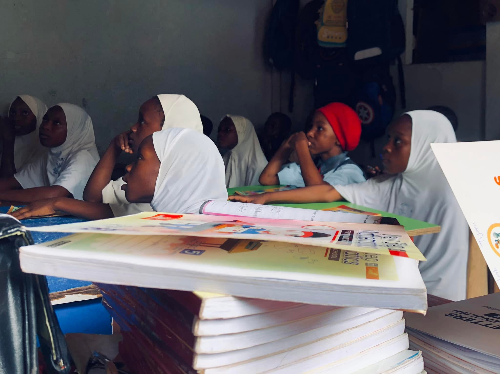
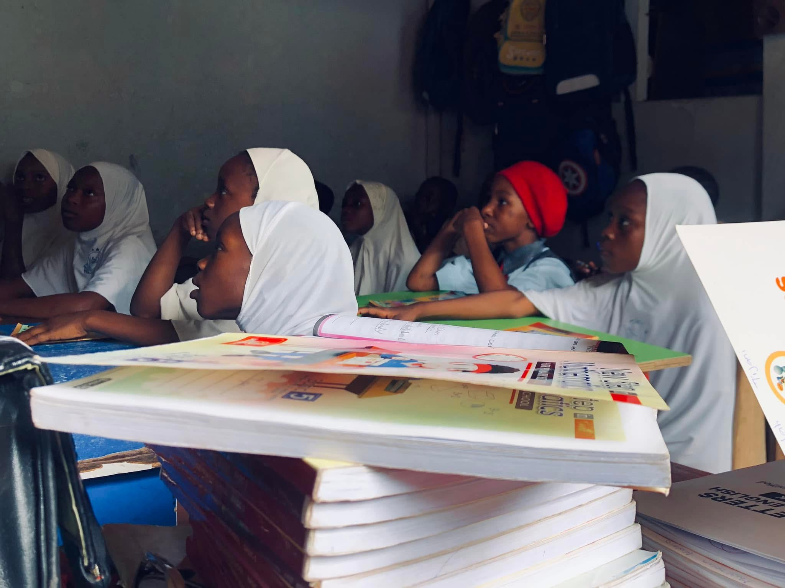
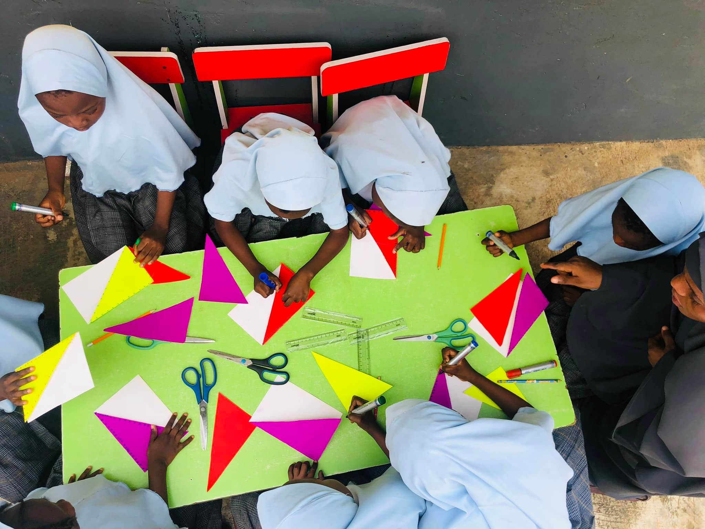
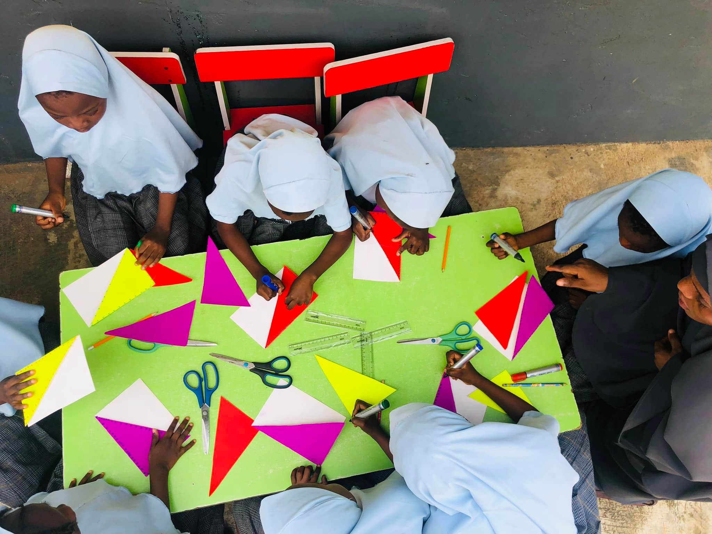
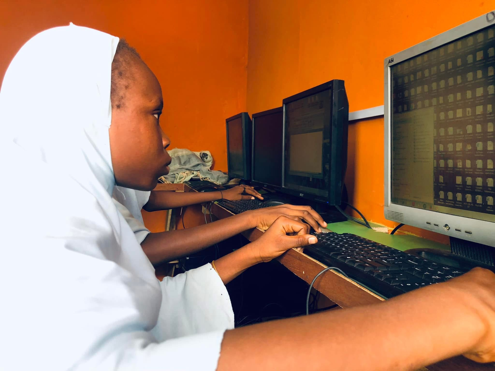
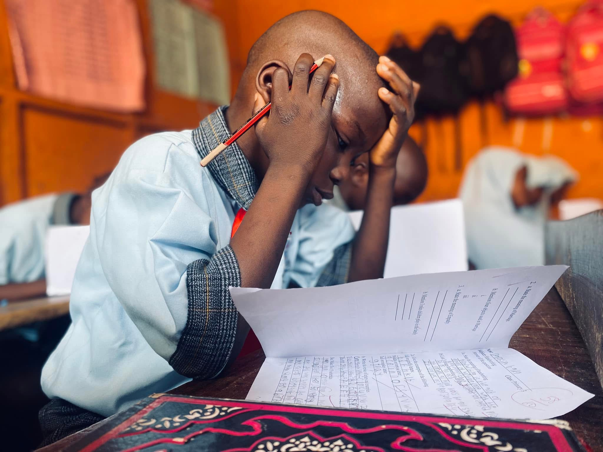
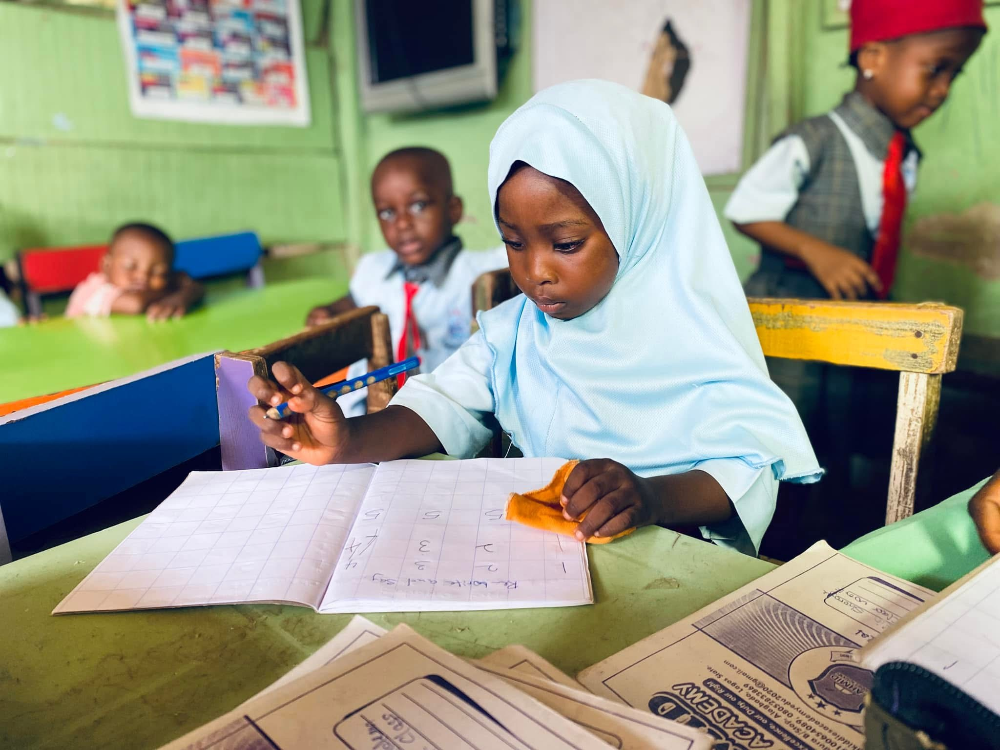
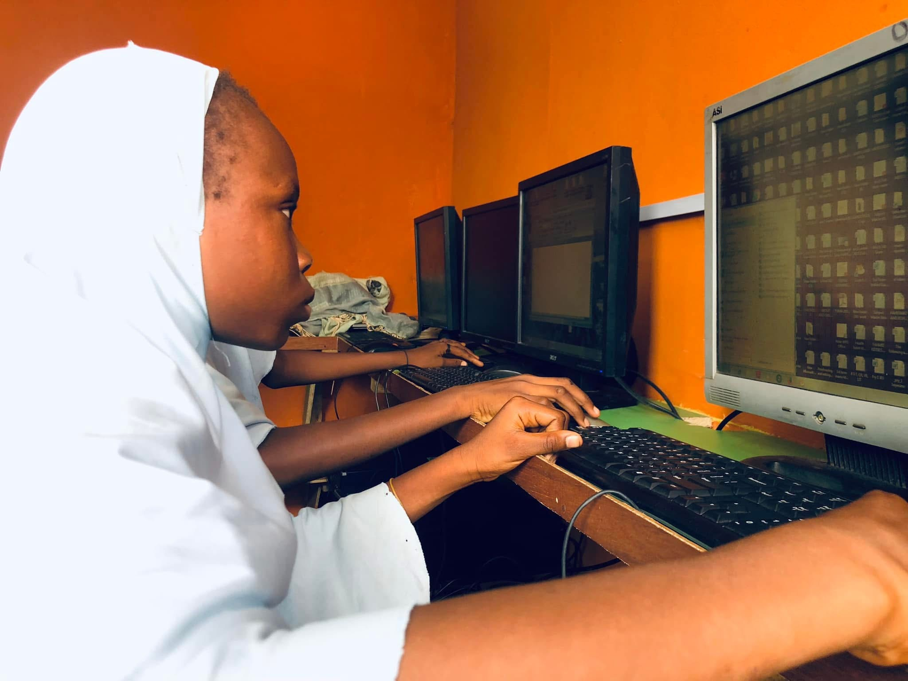
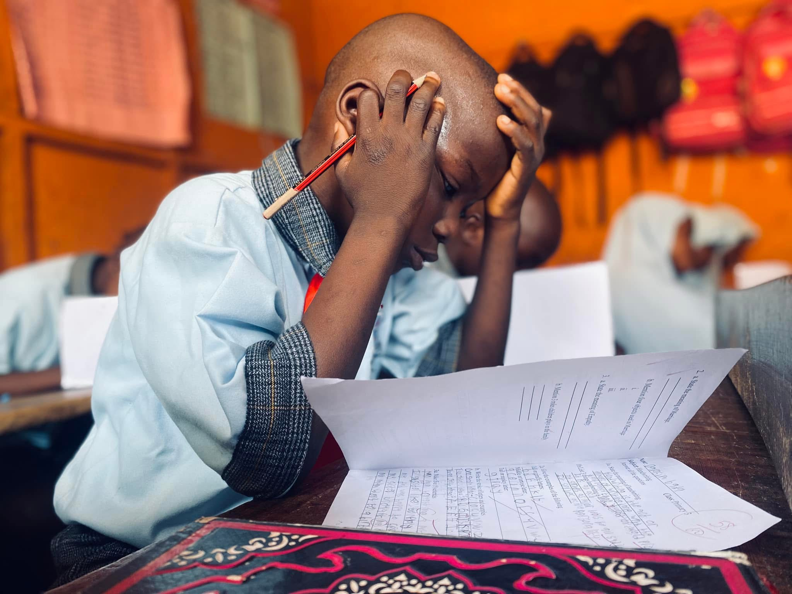
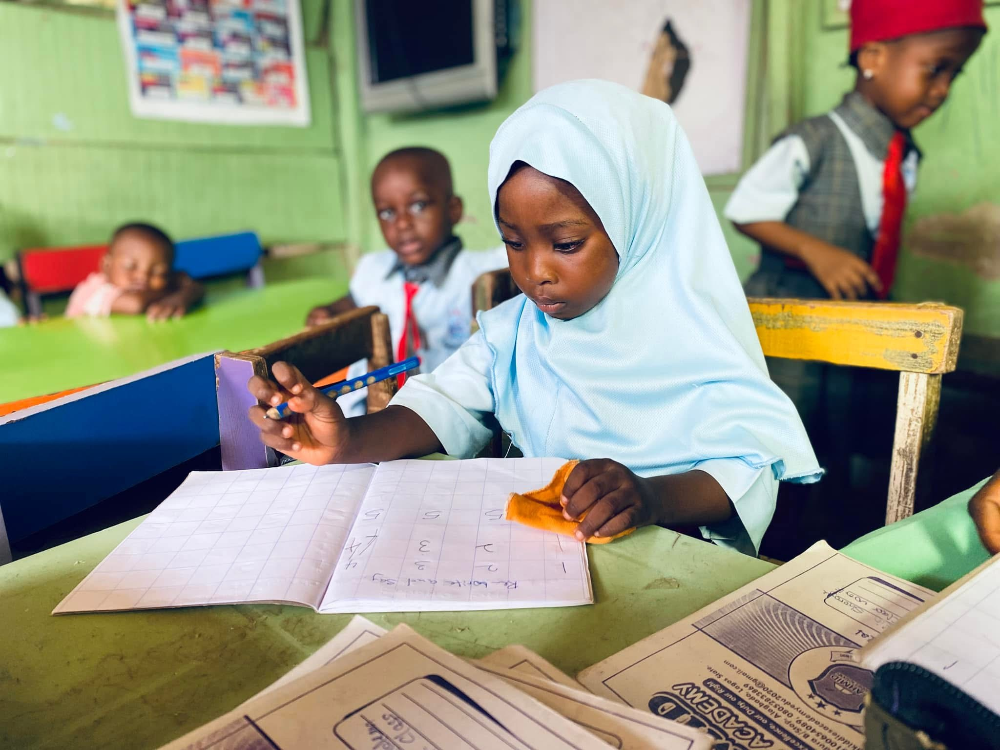

 

 





Strong Academic Foundation
We place strong emphasis on literacy, numeracy, and critical thinking skills that prepare pupils for steady academic progress.
Building strong academic foundations and positive values in a safe, caring, and structured learning environment.
Enroll Your Child Now!We place strong emphasis on literacy, numeracy, and critical thinking skills that prepare pupils for steady academic progress.
Our school provides a structured, secure, and nurturing atmosphere where every child feels protected and supported.
Our teachers are experienced, patient, and committed to guiding pupils with care, discipline, and professionalism.
We promote discipline, respect, responsibility, and good behaviour as essential parts of a child's education.
Our school activities are carefully planned to balance academic learning with creative and social development.
We maintain open communication with parents and create a welcoming environment where pupils can grow with confidence.
Our nursery programme focuses on guided play, early literacy, numeracy, and social development in a joyful and supportive learning environment.
Explore Nursery ProgrammeThe primary programme delivers a structured curriculum that builds strong academic skills, confidence, discipline, and independent thinking.
Explore Primary Programme"Fahmid has transformed our child's confidence and learning. We couldn't be happier with the progress."
"Dedicated teachers and a genuinely caring environment. Our son looks forward to school every day."
"We see real improvement academically and socially. The school's values align perfectly with ours."
Admissions are currently open for the new academic session.
Parents who are seeking a caring, disciplined, and academically focused school are encouraged to apply or schedule a visit.
Apply for Admission Schedule a Visit